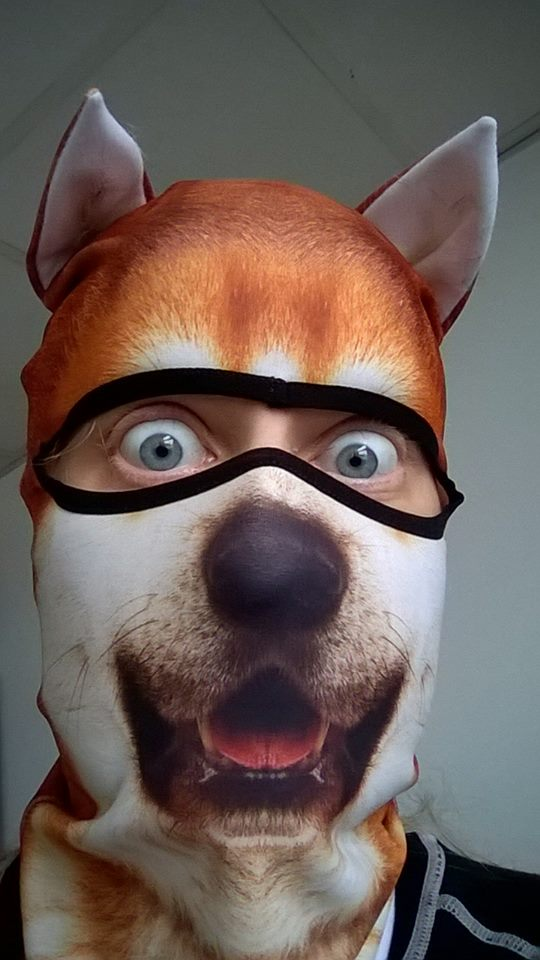

Mitt namn är Anna Sandberg och är född och uppvuxen i Stockholm. Jag jobbar som teknisk chef för Shair Broadcast Technology AB, ett företag som säljer och marknadsför teknik till proffesionella TV- & videoföretag samt fotografer.
Innan dess så jobbade jag under ca tjugo år som animatör och videografiker. Efter att ha blivit mer och mer intresserad av tekniken bakom påbörjade jag en civilingenjörsutbildning i Medieteknik på KTH i Stockholm. Den utbildningen visade sig dock vara mindre teknikinriktad än vad jag förväntat mig varför jag sökt kurser utanför det ordinarie programmet.
På fritiden gillar jag att pyssla med datorer, jag fick min första dator redan som åttaåring och har aldrig slutat fascineras av dem. Utöver programmeringen ägnar jag mig också åt att måla akvarell och odla porslinssblommor.
